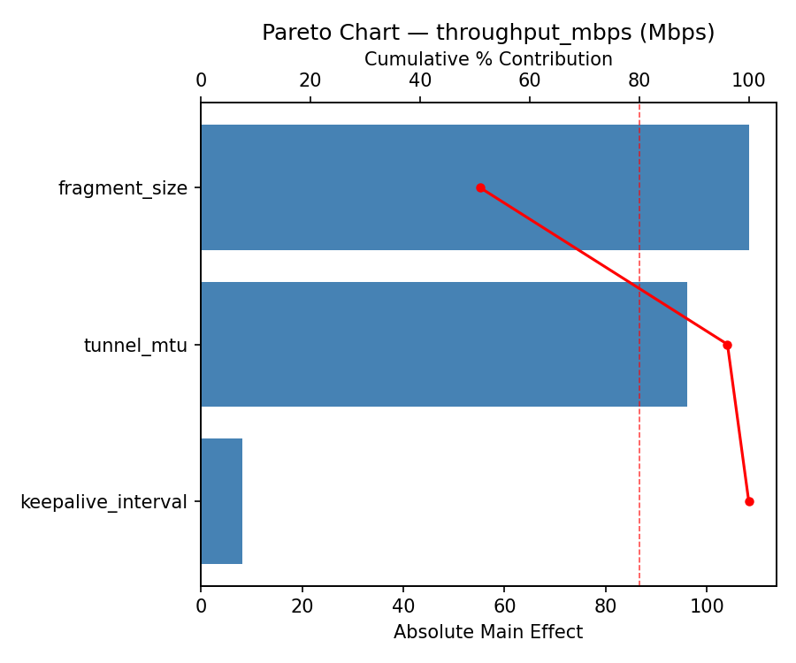
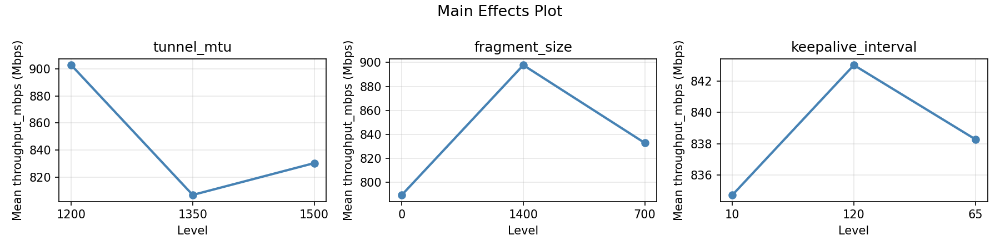
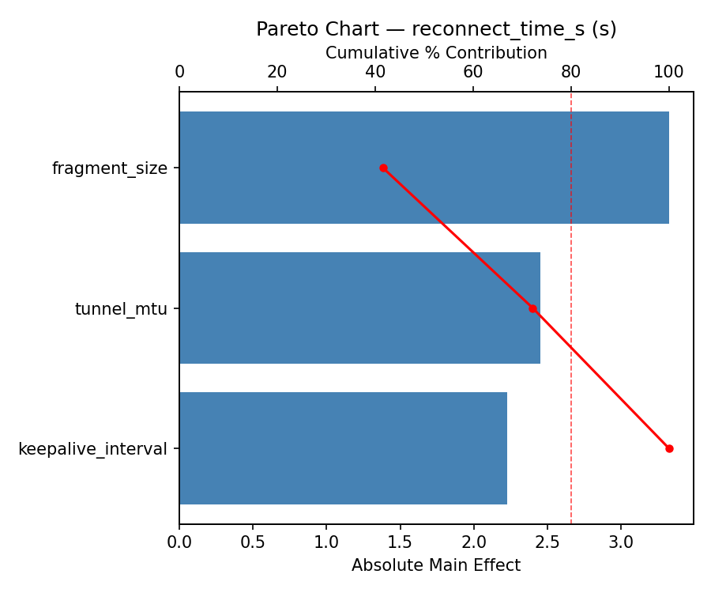
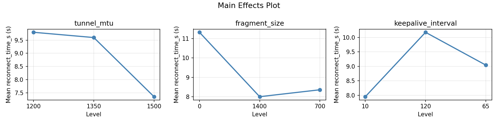
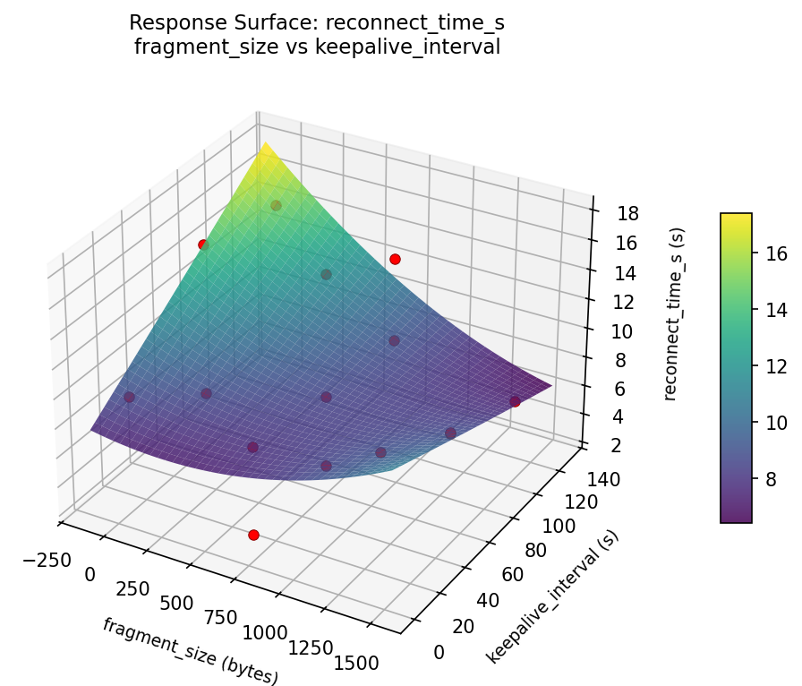
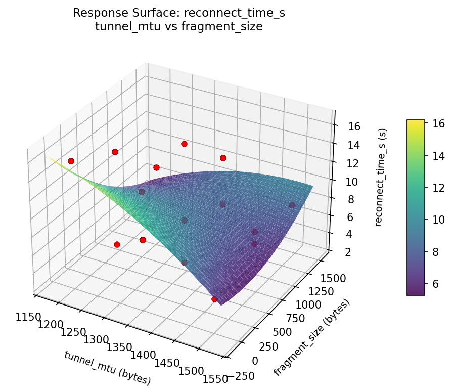
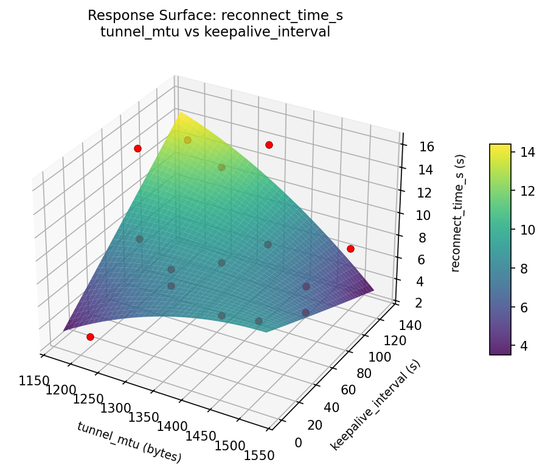
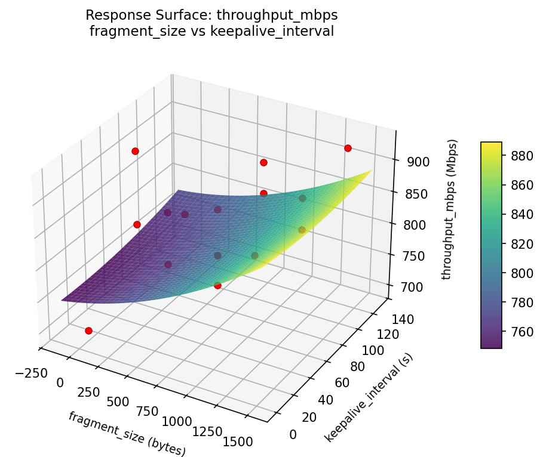
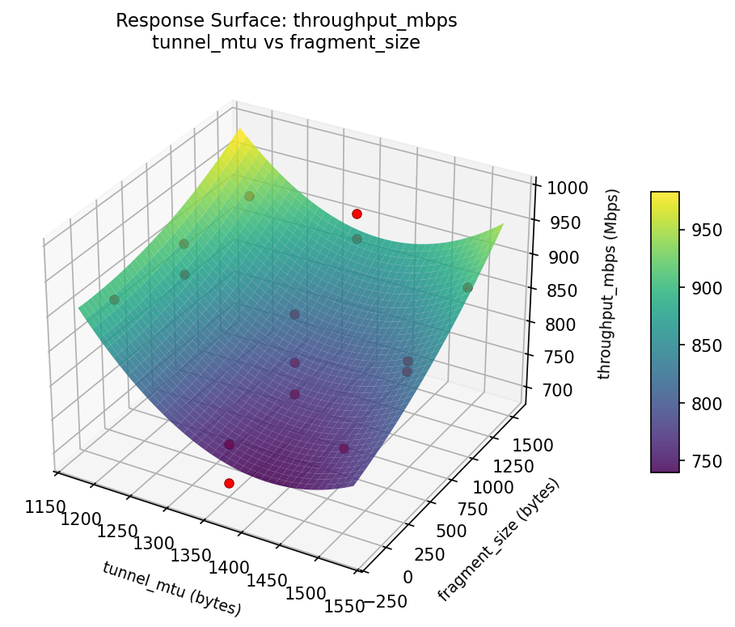
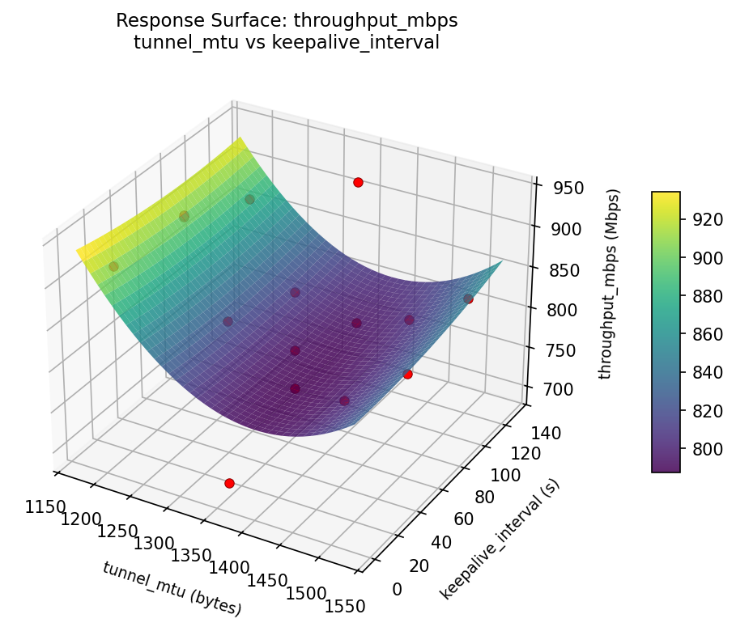

Summary
This experiment investigates vpn tunnel mtu. Box-Behnken design for MTU, fragmentation, and keepalive to optimize throughput and reconnect time.
The design varies 3 factors: tunnel mtu (bytes), ranging from 1200 to 1500, fragment size (bytes), ranging from 0 to 1400, and keepalive interval (s), ranging from 10 to 120. The goal is to optimize 2 responses: throughput mbps (Mbps) (maximize) and reconnect time s (s) (minimize). Fixed conditions held constant across all runs include protocol = wireguard, encryption = chacha20.
A Box-Behnken design was chosen because it efficiently fits quadratic models with 3 continuous factors while avoiding extreme corner combinations — requiring only 15 runs instead of the 8 needed for a full factorial at two levels.
Quadratic response surface models were fitted to capture potential curvature and factor interactions. The RSM contour plots below visualize how pairs of factors jointly affect each response.
Key Findings
For throughput mbps, the most influential factors were keepalive interval (64.4%), tunnel mtu (26.3%), fragment size (9.3%). The best observed value was 927.0 (at tunnel mtu = 1350, fragment size = 700, keepalive interval = 65).
For reconnect time s, the most influential factors were keepalive interval (48.6%), fragment size (29.2%), tunnel mtu (22.2%). The best observed value was 2.7 (at tunnel mtu = 1500, fragment size = 700, keepalive interval = 120).
Recommended Next Steps
- Run confirmation experiments at the predicted optimal settings to validate the model.
- Consider whether any fixed factors should be varied in a future study.
Experimental Setup
Factors
| Factor | Low | High | Unit |
|---|
tunnel_mtu | 1200 | 1500 | bytes |
fragment_size | 0 | 1400 | bytes |
keepalive_interval | 10 | 120 | s |
Fixed: protocol = wireguard, encryption = chacha20
Responses
| Response | Direction | Unit |
|---|
throughput_mbps | ↑ maximize | Mbps |
reconnect_time_s | ↓ minimize | s |
Configuration
{
"metadata": {
"name": "VPN Tunnel MTU",
"description": "Box-Behnken design for MTU, fragmentation, and keepalive to optimize throughput and reconnect time"
},
"factors": [
{
"name": "tunnel_mtu",
"levels": [
"1200",
"1500"
],
"type": "continuous",
"unit": "bytes"
},
{
"name": "fragment_size",
"levels": [
"0",
"1400"
],
"type": "continuous",
"unit": "bytes"
},
{
"name": "keepalive_interval",
"levels": [
"10",
"120"
],
"type": "continuous",
"unit": "s"
}
],
"fixed_factors": {
"protocol": "wireguard",
"encryption": "chacha20"
},
"responses": [
{
"name": "throughput_mbps",
"optimize": "maximize",
"unit": "Mbps"
},
{
"name": "reconnect_time_s",
"optimize": "minimize",
"unit": "s"
}
],
"settings": {
"operation": "box_behnken",
"test_script": "use_cases/52_vpn_tunnel_mtu/sim.sh"
}
}
Experimental Matrix
The Box-Behnken Design produces 15 runs. Each row is one experiment with specific factor settings.
| Run | tunnel_mtu | fragment_size | keepalive_interval |
|---|
| 1 | 1350 | 0 | 10 |
| 2 | 1350 | 700 | 65 |
| 3 | 1500 | 700 | 120 |
| 4 | 1500 | 700 | 10 |
| 5 | 1350 | 700 | 65 |
| 6 | 1350 | 700 | 65 |
| 7 | 1200 | 700 | 120 |
| 8 | 1500 | 0 | 65 |
| 9 | 1350 | 0 | 120 |
| 10 | 1500 | 1400 | 65 |
| 11 | 1200 | 700 | 10 |
| 12 | 1350 | 1400 | 120 |
| 13 | 1200 | 0 | 65 |
| 14 | 1200 | 1400 | 65 |
| 15 | 1350 | 1400 | 10 |
Step-by-Step Workflow
1
Preview the design
$ python doe.py info --config use_cases/52_vpn_tunnel_mtu/config.json
2
Generate the runner script
$ python doe.py generate --config use_cases/52_vpn_tunnel_mtu/config.json \
--output use_cases/52_vpn_tunnel_mtu/results/run.sh --seed 42
3
Execute the experiments
$ bash use_cases/52_vpn_tunnel_mtu/results/run.sh
4
Analyze results
$ python doe.py analyze --config use_cases/52_vpn_tunnel_mtu/config.json
5
Get optimization recommendations
$ python doe.py optimize --config use_cases/52_vpn_tunnel_mtu/config.json
6
Generate the HTML report
$ python doe.py report --config use_cases/52_vpn_tunnel_mtu/config.json \
--output use_cases/52_vpn_tunnel_mtu/results/report.html
Features Exercised
| Feature | Value |
|---|
| Design type | box_behnken |
| Factor types | continuous (all 3) |
| Arg style | double-dash |
| Responses | 2 (throughput_mbps ↑, reconnect_time_s ↓) |
| Total runs | 15 |
Analysis Results
Generated from actual experiment runs using the DOE Helper Tool.
Response: throughput_mbps
Top factors: keepalive_interval (64.4%), tunnel_mtu (26.3%), fragment_size (9.3%).
Pareto Chart

Main Effects Plot

Response: reconnect_time_s
Top factors: keepalive_interval (48.6%), fragment_size (29.2%), tunnel_mtu (22.2%).
Pareto Chart

Main Effects Plot

Response Surface Plots
3D surfaces fitted with quadratic RSM. Red dots are observed data points.
reconnect time s fragment size vs keepalive interval

reconnect time s tunnel mtu vs fragment size

reconnect time s tunnel mtu vs keepalive interval

throughput mbps fragment size vs keepalive interval

throughput mbps tunnel mtu vs fragment size

throughput mbps tunnel mtu vs keepalive interval

Full Analysis Output
=== Main Effects: throughput_mbps ===
Factor Effect Std Error % Contribution
--------------------------------------------------------------
keepalive_interval 83.2143 18.5135 64.4%
tunnel_mtu 33.9643 18.5135 26.3%
fragment_size 12.0000 18.5135 9.3%
=== Summary Statistics: throughput_mbps ===
tunnel_mtu:
Level N Mean Std Min Max
------------------------------------------------------------
1200 4 831.0000 70.1285 752.0000 911.0000
1350 7 853.7143 78.2256 695.0000 927.0000
1500 4 819.7500 75.8436 739.0000 916.0000
fragment_size:
Level N Mean Std Min Max
------------------------------------------------------------
0 4 842.7500 49.6345 798.0000 913.0000
1400 4 830.7500 77.9118 752.0000 927.0000
700 7 840.7143 87.5875 695.0000 916.0000
keepalive_interval:
Level N Mean Std Min Max
------------------------------------------------------------
10 4 887.5000 31.2677 858.0000 916.0000
120 4 849.7500 87.0914 739.0000 927.0000
65 7 804.2857 68.2952 695.0000 890.0000
=== Main Effects: reconnect_time_s ===
Factor Effect Std Error % Contribution
--------------------------------------------------------------
keepalive_interval 5.2857 1.0999 48.6%
fragment_size 3.1750 1.0999 29.2%
tunnel_mtu 2.4107 1.0999 22.2%
=== Summary Statistics: reconnect_time_s ===
tunnel_mtu:
Level N Mean Std Min Max
------------------------------------------------------------
1200 4 8.9000 3.9455 5.5000 14.6000
1350 7 9.9857 3.5254 5.6000 15.7000
1500 4 7.5750 6.2681 2.7000 16.0000
fragment_size:
Level N Mean Std Min Max
------------------------------------------------------------
0 4 9.3250 4.4485 5.5000 15.7000
1400 4 10.9750 5.0993 5.6000 16.0000
700 7 7.8000 3.8863 2.7000 13.1000
keepalive_interval:
Level N Mean Std Min Max
------------------------------------------------------------
10 4 8.4750 5.3730 2.7000 15.7000
120 4 5.9000 2.2045 2.9000 7.7000
65 7 11.1857 3.6499 5.5000 16.0000
Optimization Recommendations
=== Optimization: throughput_mbps ===
Direction: maximize
Best observed run: #4
tunnel_mtu = 1350
fragment_size = 700
keepalive_interval = 65
Value: 927.0
RSM Model (linear, R² = 0.2132, Adj R² = -0.0013):
Coefficients:
intercept +838.6000
tunnel_mtu +10.7500
fragment_size -32.8750
keepalive_interval -26.8750
RSM Model (quadratic, R² = 0.4806, Adj R² = -0.4543):
Coefficients:
intercept +852.0000
tunnel_mtu +10.7500
fragment_size -32.8750
keepalive_interval -26.8750
tunnel_mtu*fragment_size -41.5000
tunnel_mtu*keepalive_interval +21.5000
fragment_size*keepalive_interval -24.7500
tunnel_mtu^2 -2.8750
fragment_size^2 -41.1250
keepalive_interval^2 +18.8750
Curvature analysis:
fragment_size coef=-41.1250 concave (has a maximum)
keepalive_interval coef=+18.8750 convex (has a minimum)
tunnel_mtu coef=-2.8750 concave (has a maximum)
Notable interactions:
tunnel_mtu*fragment_size coef=-41.5000 (antagonistic)
fragment_size*keepalive_interval coef=-24.7500 (antagonistic)
tunnel_mtu*keepalive_interval coef=+21.5000 (synergistic)
Predicted optimum (from linear model):
tunnel_mtu = 1350
fragment_size = 0
keepalive_interval = 10
Predicted value: 898.3500
Model quality: Weak fit — consider adding center points or using a different design.
Factor importance:
1. fragment_size (effect: 75.1, contribution: 50.0%)
2. keepalive_interval (effect: 53.8, contribution: 35.7%)
3. tunnel_mtu (effect: 21.5, contribution: 14.3%)
=== Optimization: reconnect_time_s ===
Direction: minimize
Best observed run: #1
tunnel_mtu = 1500
fragment_size = 700
keepalive_interval = 120
Value: 2.7
RSM Model (linear, R² = 0.0701, Adj R² = -0.1835):
Coefficients:
intercept +9.0533
tunnel_mtu +0.1375
fragment_size +1.2750
keepalive_interval -0.7625
RSM Model (quadratic, R² = 0.7199, Adj R² = 0.2157):
Coefficients:
intercept +6.4667
tunnel_mtu +0.1375
fragment_size +1.2750
keepalive_interval -0.7625
tunnel_mtu*fragment_size -3.3750
tunnel_mtu*keepalive_interval -2.5000
fragment_size*keepalive_interval +2.2750
tunnel_mtu^2 +2.4417
fragment_size^2 +3.5667
keepalive_interval^2 -1.1583
Curvature analysis:
fragment_size coef=+3.5667 convex (has a minimum)
tunnel_mtu coef=+2.4417 convex (has a minimum)
keepalive_interval coef=-1.1583 concave (has a maximum)
Notable interactions:
tunnel_mtu*fragment_size coef=-3.3750 (antagonistic)
tunnel_mtu*keepalive_interval coef=-2.5000 (antagonistic)
fragment_size*keepalive_interval coef=+2.2750 (synergistic)
Predicted optimum (from quadratic model):
tunnel_mtu = 1200
fragment_size = 1400
keepalive_interval = 65
Predicted value: 16.9875
Model quality: Good fit — general trends are captured, some noise remains.
Factor importance:
1. fragment_size (effect: 4.7, contribution: 50.0%)
2. tunnel_mtu (effect: 2.4, contribution: 25.3%)
3. keepalive_interval (effect: 2.4, contribution: 24.7%)